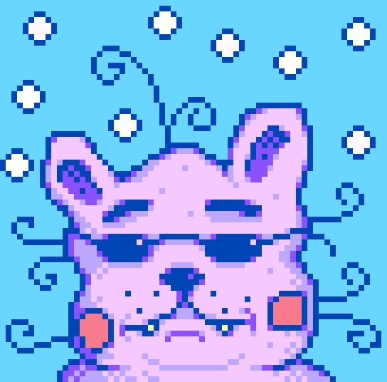
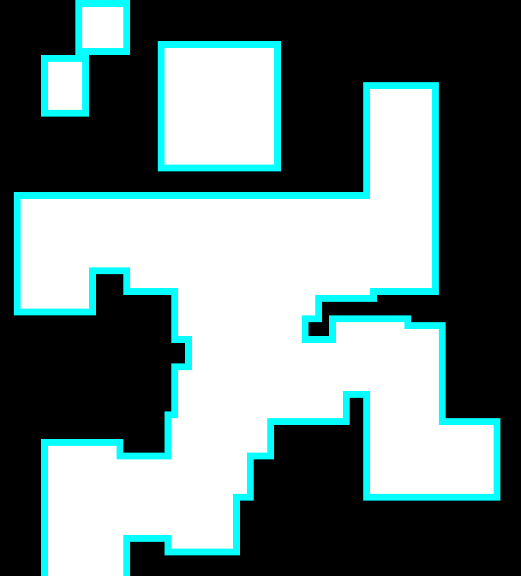
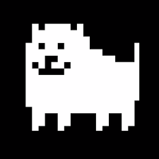

Famous Creators

"Concerned Ape"
aka: Eric Barone
Concerned Ape is a well-known indie developer. He is most known for the creation of his game, "Stardew Valley" He is currently working on a new game, "Haunted Chocolatier", which many of his fans are anxiously awaiting.

"Scott Cawthon"
Scott Cawthon didn't start off as a successful indie developer. He initially created games that were heavily criticized. In 2014, Scott Cawthon used this criticism in a final attempt to make a game. This led to the birth of the well established "FNaF Series" franchise that continues to grow to this day.

"Toby Fox"
aka: Robert F. Fox
Toby Fox revolutionized indie games with his game, "Undertale". His unique style, soundtrack, and storytelling was able to revive how people viewed Indie Games and inspired many copycat games. The game created an engaging fanbase and encouraged the development of the games' prequel, "DeltaRune"